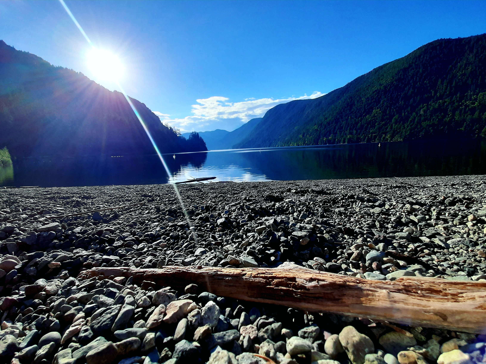

Cameron Lake is located between Port Alberni and Whiskey Creek. Local’s have said that the Lake is so deep, nobody has seen the bottom. Next to Taylor River, Cameron Lake is one of my favorite spots to check out. Small crowds in the summer. You can Oosimch privately during the Fall and Winter Months. Also, there is a pretty good place to get ice cream 5-minutes down the road.